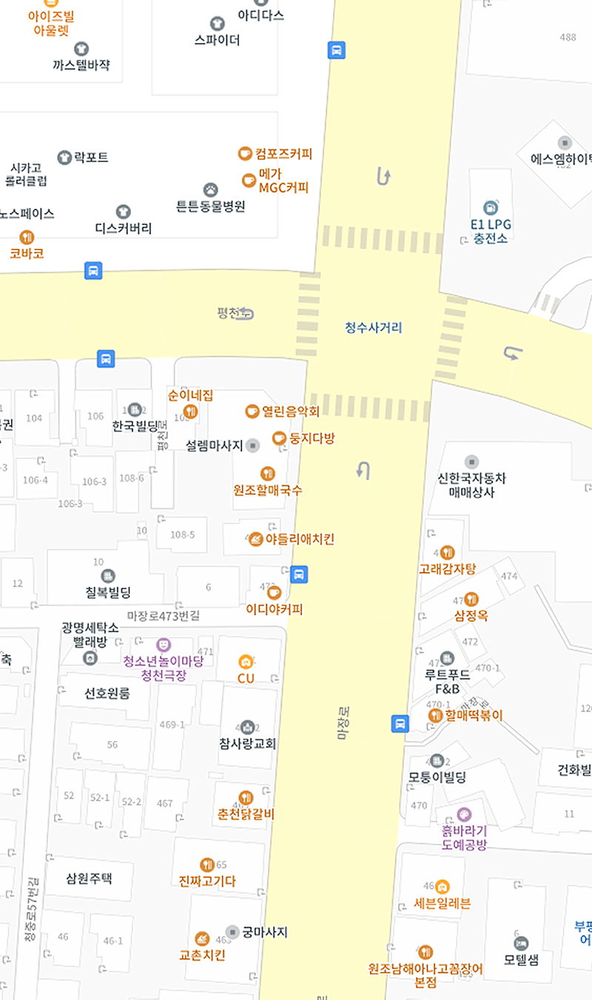

저수지명
주소
검색
주요염원
등록
이전
이동 저수지
닫기
37.3km
경기 용인시 처인구 이동읍 어비리 1335-1
조사년도
2023
축산계
총 2개
이동읍 어버리 1335-2
한우
100마리
이동읍 어버리 1335-2
한우
100마리
산업계
총 1개
이동읍 어버리 1335-2
사료제조업
100m3/일
이동읍 어버리 1335-2
사료제조업
100m3/일
이동읍 어버리 1335-2
사료제조업
100m3/일
이동읍 어버리 1335-2
사료제조업
100m3/일
양식계
총 1개
이동읍 어버리 1335-2
유수식
2,640㎡
매립계
등록 정보 없음
등록된 정보 없음
내 주변 저수지 목록 보기
현위치 이동
